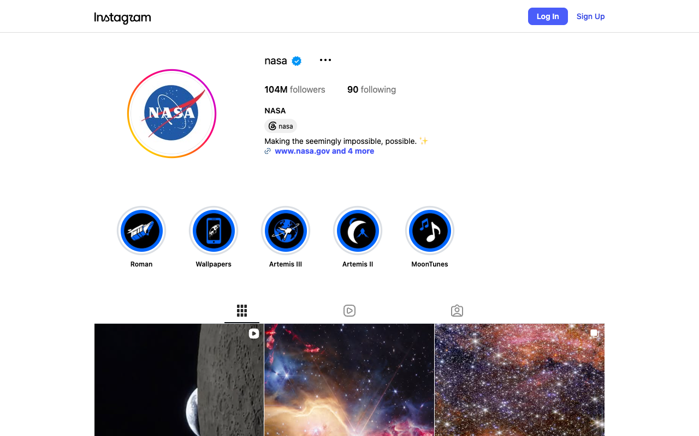
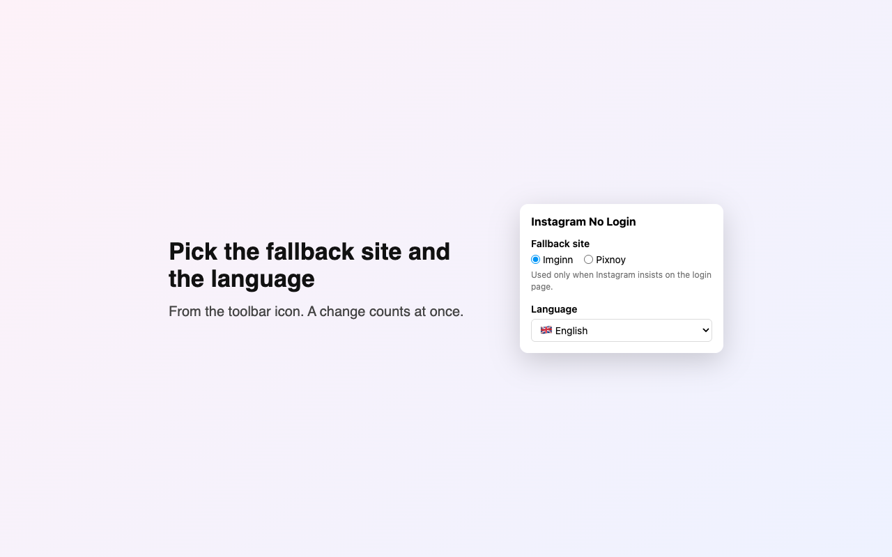

Instagram, without the login wall
A free browser extension to look at public profiles and posts on instagram.com without an account. No pop-ups, no sign-up, nothing to track you.
For Chrome, Edge, Firefox and other Chromium browsers · Free and open source (GPL-3.0)
What it does
It changes how instagram.com behaves for visitors who are not logged in, and nothing else.
No login pop-up The "See photos, videos and more" pop-up is closed before it is drawn.
Posts and profiles open Clicking a post, reel or account opens it as a normal page instead of the login pop-up.
Search on the home page Type a name and pick an account from the list, or paste a link to go straight there.
Stories on Imginn Instagram only plays stories for logged-in visitors, so a story click opens it on Imginn.
A fallback When Instagram insists on its login page, the same profile opens on Imginn or Pixnoy.
15 languages English, Dutch, Polish, Hindi, German, Spanish, French, Portuguese, Italian, Turkish, Indonesian, Russian, Arabic, Chinese and Japanese.

A public profile, logged out, without the pop-up. 
Pick the fallback site and the language from the toolbar.
Install
The store listings are on their way. Until then, pick your browser and install it by hand in a minute.
Download the ZIP below and unzip it.
Open chrome://extensions (Edge: edge://extensions) and turn on Developer mode .
Click Load unpacked and choose the unzipped folder.
Open instagram.com . Pin the icon from the puzzle-piece menu to change the settings.
Download for Chromium ZIP
Download the Firefox ZIP below. Firefox only keeps add-ons signed by Mozilla, which comes with the listing.
Open about:debugging#/runtime/this-firefox, click Load Temporary Add-on… and choose the ZIP. It stays until Firefox closes.
On instagram.com, allow the add-on from the puzzle-piece menu if nothing changes.
Download for Firefox ZIP
No store needed
Safari and others
as a userscript
Install Userscripts (Safari) or Violentmonkey / Tampermonkey .
Open the userscript below and confirm the install.
When asked, allow it to reach search.brave.com, imgs.search.brave.com and html.duckduckgo.com: that is the account list in the search box.
Open the userscript
Use the extension or the userscript, not both. Only public accounts work: private accounts stay private. When you are logged in to Instagram, it stays out of the way.
Privacy
It collects nothing and has no server. The only thing that leaves your browser is what you type in its search box, sent to Brave Search (or DuckDuckGo) without cookies to find the accounts. Read the privacy policy .